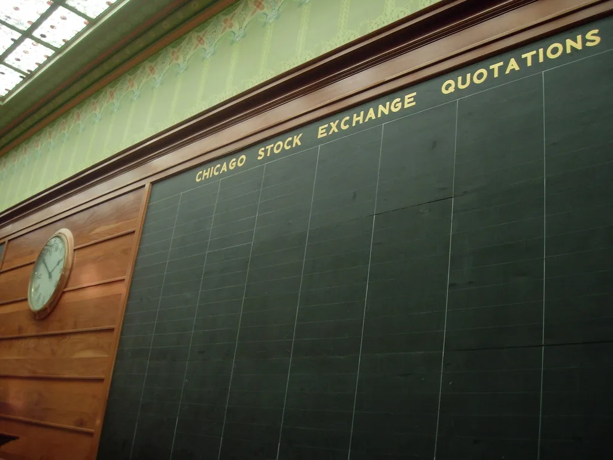
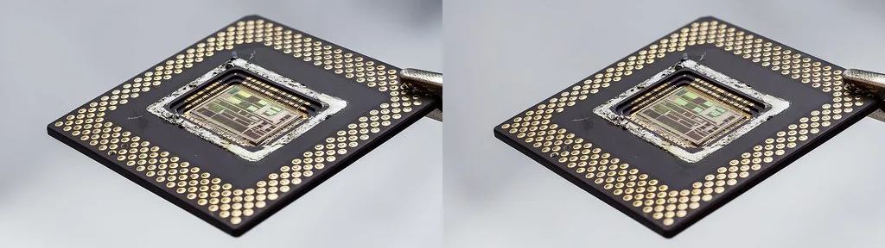

코스피, 3% 넘게 급등해 6900선 회복…'AGI 선언'에 반도체 랠리
코스피가 7일 장 초반 3% 넘게 급등하며 6,900선을 되찾았다. 이날 코스피는 직전 거래일보다 223.57포인트(3.34%) 오른 6,910.78로 문을 열었고, 오전 내내 6,900대에서 강세 흐름을 이어갔다. 코스닥지수도 9.41포인트(1.16%) 오른 822.91로 개장해 820선을 회복했다. 지난달 후반 큰 폭의 조정을 겪었던 국내 증시가 반도체株를 앞세워 빠르게 반등하는 모습이다.
지수를 끌어올린 것은 시가총액 1·2위인 삼성전자와 SK하이닉스였다. 오전 거래에서 삼성전자는 4% 넘게, SK하이닉스는 5%가량 오르며 나란히 신고가권에 다가섰다. 외국인과 기관이 동시에 매수에 나서 각각 1조 원 안팎의 순매수를 기록하며 상승세를 뒷받침했다. 개인은 차익 실현 매물을 내놓으며 매도 우위를 보였다. 반도체 소재·부품·장비 업종과 인공지능(AI) 데이터센터 관련 종목으로도 매수세가 번지면서, 상승 종목 수가 하락 종목 수를 크게 웃돌았다.

이번 급등의 배경에는 오픈AI가 새 대형 언어모델 'GPT-6 아스트라'를 공개하며 "범용인공지능(AGI) 시대가 열리고 있다"고 선언한 점이 자리한다. 아스트라는 3일 제한적 미리보기로 처음 공개된 뒤 이튿날 유료 사용자에게 개방됐으며, 사이버 보안처럼 악용 소지가 큰 요청은 거부하도록 제한된 형태로 제공됐다. 회사 측은 소프트웨어 개발과 과학, 전문 업무 전반에서 '세대적 도약'이라고 평가했다.
시장은 이를 AI 인프라 투자 경쟁이 다시 가속화한다는 신호로 받아들였다. 더 크고 복잡한 모델을 훈련·구동하려면 고성능 연산장치와 이를 뒷받침하는 고대역폭 메모리(HBM), 대용량 저장장치 수요가 함께 늘어난다. 세계 HBM 시장을 사실상 양분하고 있는 국내 두 반도체 기업이 직접적인 수혜주로 지목되면서 매수세가 몰린 것으로 풀이된다.

국내 증시는 8월 후반 변동성이 컸다. 지난달 19일에는 반도체주 급락으로 매도 사이드카가 발동되며 지수가 6% 넘게 빠졌고, 이후 등락을 반복하다 9월 초 6,300선대까지 회복한 상태였다. 이날 상승분이 유지될 경우 코스피는 다시 사상 최고치 부근으로 올라서게 된다. 다만 장중 변동 폭이 커 최종 종가는 마감 후 확인해야 한다.
이번 랠리는 AI 기술 발표 하나에 국내 증시가 크게 출렁일 만큼 코스피의 방향이 반도체 대형주에 좌우되고 있음을 다시 보여줬다. 두 종목이 지수에서 차지하는 비중이 커, 이들의 주가가 오르면 지수 전체가 밀려 올라가고 반대의 경우 낙폭도 커진다. 실적 기대가 주가를 끌어올리는 국면에서는 강점이지만, 특정 산업의 업황이 꺾일 때는 지수가 함께 취약해지는 구조적 부담도 있다.
증권가에서는 AI 관련 기대가 실적으로 확인되기 전까지 밸류에이션 부담과 쏠림 위험을 경계해야 한다는 신중론도 나온다. 원/달러 환율과 미국 연방준비제도의 통화정책 방향, 엔비디아 차세대 제품용 HBM 공급 일정, 국내 기업들의 3분기 실적 전망 등이 향후 지수 흐름을 좌우할 변수로 꼽힌다. 단기간에 지수가 크게 뛴 만큼 차익 실현 매물이 나오며 변동성이 확대될 수 있고, 특정 업종에 매수세가 집중된 만큼 조정 국면에서의 되돌림 가능성도 함께 거론된다.